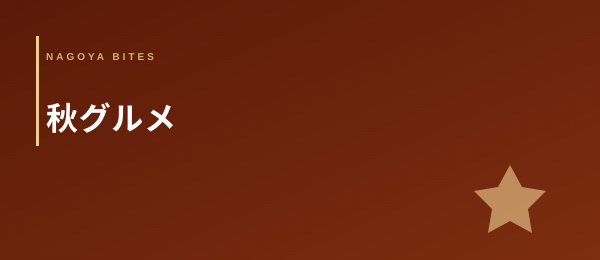

Autumn Gourmet 2026
名古屋 秋グルメ 2026
おすすめ10選 — 松茸・秋刀魚・栗・新米 食欲の秋を業界人が厳選
名古屋の秋は、松茸・秋刀魚・栗・新米・きのこという五つの旬食材が揃ったとき、はじめて「食欲の秋」として完成する。岐阜・三重からほど近い山の恵みと、三河湾・伊勢湾の秋の魚の両方を手に入れられる名古屋の地の利を、業界人の目線で選び抜いた10軒に凝縮した。秋の旬食材の扱い方・空間の「秋感」・食材と日本酒・ワインのペアリング、この3軸で一切妥協なく選定している。
2026年 名古屋の秋グルメシーズン — 9月〜11月
Editor's Note — この特集の3つの選定軸
- 秋の旬食材をどう扱っているか：松茸・秋刀魚・戻り鰹・栗・新米・きのこの調達ルートと仕込みの精度。産地との直接契約や当日仕入れを実践している店のみを選定した
- 空間の「秋感」：照明の色温度・器の選択・食卓の空気感。「秋という季節を皿と空間で表現できているか」が評価軸で、季節無関係の通年メニューだけの店は選外とした
- 秋の食材＋日本酒・ワインのペアリング：秋の新酒・ひやおろし・秋ワインとの組み合わせの完成度。「この秋、この食材と一緒に飲むべき一杯」がある店を選んだ
名古屋の秋グルメを業界人として語るとき、真っ先に思い浮かぶのは「山の近さ」だ。岐阜・三重の山間部は名古屋から車で1〜2時間圏内にあり、国産松茸の主産地である岐阜・三重・長野産の食材が朝採りに近い鮮度で入荷できる環境が整っている。松茸の香りは鮮度が命で、採取から12時間以内に調理に入れる産地直送ルートを持つ店とそうでない店では、土瓶蒸しの香気に歴然たる差が出る。名古屋の一流の和食・割烹が秋に強いのは、この地理的条件が食材の調達力に直結しているからだ。
もう一つの軸が「三河湾・伊勢湾の秋の魚」だ。秋は戻り鰹・秋刀魚・サワラ・アオリイカ・鰆など、夏とはまったく異なる顔ぶれの魚が店頭を彩る季節でもある。特に戻り鰹（9月〜10月）は、春の「上り鰹」と比べて脂の乗りが格段に増し、秋の食の豊かさを象徴する食材として業界内でも扱いに気合が入る。これらの食材が、秋の日本酒（ひやおろし・秋新酒）や秋のブルゴーニュ赤ワインと出会ったとき、名古屋の秋グルメは完成する。
01 — 厳選10軒
矢場町に構える日本料理の名店で、秋の松茸コースが業界人の間で群を抜いた評価を受けている一軒。岐阜・中津川産の国産松茸を生産者から直接仕入れるルートを確立しており、9月下旬から10月中旬のシーズンには「松茸尽くしの秋会席（¥18,000〜）」を提供する。コースの軸は土瓶蒸し・松茸ご飯・炭火焼き松茸の三本柱で、土瓶蒸しの出汁は利尻昆布と本枯れ鰹節から引いた一番出汁を用い、松茸の香気を余すことなく閉じ込める。炭火焼き松茸は備長炭の遠赤外線でゆっくりと火を入れ、外側の歯ごたえと内側のとろみを両立させる焼き加減が絶妙だ。器はすべて秋の食材に合わせた信楽・瀬戸物を季節ごとに入れ替えており、食卓全体が「秋の空気」を帯びる。席数が少なく（カウンター8席・個室2室）、シーズン中の週末予約は8月末には満席になるため早期予約が必須だ。
「松茸料理の格は土瓶蒸しの出汁一杯で全部わかる。松茸の香りは揮発性が高いため、出汁に閉じ込める温度と時間のコントロールが料理人の腕の差になる。秋月の土瓶蒸しは蓋を開けた瞬間の香気が別格だ。」
覚王山の住宅街に佇む炉端焼き専門店。秋の看板食材は秋刀魚（サンマ）で、9月中旬〜10月下旬の旬の時期に三陸（岩手・宮城産）・北海道産の大型サンマを直送で仕入れ、備長炭の炉端でじっくりと焼き上げる。炭火の遠赤外線が皮目をパリッと仕上げながら内側の脂を閉じ込め、サンマ本来の甘みと炭の香りが融合する仕上がりは、家庭のグリルや電気焼きとは次元が違う。脂の乗りのピークは9月後半〜10月前半で、旬のサンマは内臓の苦みも旨みに変わるため「はらわたごと食べてこそ」という考え方でサーブされる。秋の一品料理として秋刀魚の塩麹漬け炙り・サンマのなめろうも揃い、秋刀魚の多面的な味わいが楽しめる。愛知・三重・岐阜の秋の地酒（ひやおろし）のセレクションが充実しており、秋刀魚と冷えたひやおろしの組み合わせが業界人の「秋の定番」として定着している。
「秋刀魚の炭火焼きで最も重要なのは炭の置き方と魚との距離だ。遠すぎれば脂が落ちず、近すぎれば焦げる。炉端焼きの職人は炭の温度を感覚で読みながら1尾ごとに距離を変える。秋風の焼き師の技術はその精度にある。」
本山エリアに構える、炊き込みご飯を専門とする稀有な業態の一軒。「米と具材の組み合わせだけで人を感動させる」という一点に特化した店で、秋の名物は栗と新米の炊き込みご飯（¥1,600〜）だ。愛知・奥三河産の新米（コシヒカリ・あいちのかおり）を9月の収穫直後から仕入れ、丹波・美濃産の大粒栗と組み合わせて土鍋で炊き上げる。栗は渋皮煮と生栗の二種を使い分け、甘みの層を重ねながら新米の甘みと融合させる仕込みは、定番の炊き込みご飯の概念を超えている。秋のコース（¥2,400〜）では一汁三菜に栗ごはんが主役として据えられ、副菜はすべて秋の食材（きのこ・根菜・秋の山菜）で構成される。おにぎりのテイクアウト対応もあり、栗ごはんのおにぎり（¥380）は午後には売り切れることが多い。米の炊き加減・火加減の熟練度は業界内でも群を抜き、「名古屋でご飯を食べるなら万葉」という評判が定着している。
「炊き込みご飯の評価基準は米の粒立ちと具材の入り方のバランスだ。具材が多すぎれば米が水っぽくなり、少なすぎれば白米の炊き込みになる。万葉の栗ごはんは栗と米の比率が絶妙で、どの一口にも栗の甘みと新米の香りが同居している。」
錦エリアに構えるカウンター鮨の名店で、秋の魚介おまかせコースの完成度が業界人に高く評価されている。秋の看板は戻り鰹（9月〜10月）・サワラ（秋の押さえ）・アオリイカ（秋が旬）・新サンマの握り・秋の伊勢海老と、秋を彩る魚介が全力で揃う。戻り鰹は三重・尾鷲産・高知産の一本釣りのものを日替わりで使い分け、脂の乗り方の違いを「今日の鰹」として客に伝えるスタイルが独自だ。シャリは酢飯に秋の気候に合わせた温度帯に調整し、ネタとの融合を最優先に設計している。秋の日本酒（ひやおろし・秋上がり）のペアリングコースが名物で、各握りに合わせた1合の地酒を提案するスタイルが業界内で話題を呼んでいる。接待・記念日・ビジネスの特別会食での利用が多く、カウンター越しの大将との会話も含めた体験設計が評価されている。
「戻り鰹の評価は脂の質と量だけではなく、水分量にある。水っぽい鰹は脂が多くても旨みが薄い。紅葉の大将は鰹の切り立てる前に必ず身の断面を確認しており、その日の鰹の状態に応じて仕込みの仕方を変える。」
今池の路地裏に構える燻製料理専門のダイニングで、秋はきのこ料理に特化したメニュー構成が業界人の支持を集めている。岐阜・中山道沿いの農家から直接仕入れた椎茸・舞茸・エリンギ・ポルチーニ（輸入）を燻製という手法で調理することで、きのこの旨み成分（グルタミン酸）を凝縮しながら燻の香りで奥行きを加える。燻製の木材には桜・リンゴ・ナラの3種を使い分け、きのこの種類に合わせた燻材を選ぶ精度が業界人の評価軸だ。秋の名物「きのこ盛り合わせ燻製（¥1,800〜）」は5〜7種のきのこを一皿で食べ比べられる構成で、きのこ同士の香りの違いを学ぶ体験にもなる。クラフトビールのペアリングにも力を入れており、燻製料理に合う「スモーキー系エール」の提案が定評を呼んでいる。秋のきのこと燻製というニッチな掛け合わせが、名古屋の飲食業界人が「隠れた名店」として囁く所以だ。
「きのこの燻製は調理時間が短すぎると表面だけに燻香がつき、長すぎると水分が全部飛んでパサパサになる。土煙は燻す時間をきのこの水分量・肉厚・鮮度で変えており、その日の食材状態に合わせた微調整が料理の完成度につながっている。」
名古屋駅から歩いて8分の閑静な場所に構える老舗割烹で、秋の懐石コースの格と接待対応力が業界人から最上位の評価を受けている。秋のコースは9月から11月にかけて献立が変わり続け、9月後半の松茸・10月の戻り鰹と新米・11月の根菜と秋の終わりの魚と、秋の移ろいをコース全体で表現するアプローチが際立つ。割烹の技術の真価が問われる松茸の土瓶蒸しは、昆布・鰹の一番出汁を基底に、蒸し時間を5分以内に設定することで松茸の揮発性の香気を出汁に移しきる精密な調理法を採用している。個室は3室（2〜4名・4〜8名・10名対応）を完備しており、名古屋の財界人・企業幹部の接待に頻繁に使われる。接待コーディネートに熟達したスタッフが当日の席の空気感を読みながらサービスを変える対応力が、「大事な接待は水月で」という評判の根拠になっている。
「割烹の実力は秋に問われる。松茸・栗・戻り鰹という主役食材の扱いに加え、箸休めの一品・椀の出汁の格・〆のご飯の炊き加減まで、全部が揃って初めて秋の懐石として完成する。水月は季節の束ね方がうまい。」
覚王山の路地に構えるフランスのビストロ文化を愛知の食材で解釈した一軒。秋のメニューは「渥美半島・奥三河の秋野菜」が主役で、サツマイモ・カボチャ・ビーツ・根セロリ・菊芋などフランス料理に親しみ深い秋野菜と、愛知産のものを組み合わせたコース構成が特徴だ。鴨のロースト（秋から春が旬）が秋コースの肉料理のメインに据えられ、レンズ豆・栗・渥美半島のきのこを合わせたガルニチュールが秋の豊かさを皿の上で表現する。自然派ワインは秋向けに「ブルゴーニュ・ピノノワール」「ローヌ・グルナッシュ」「アルザスのリースリング」を中心とした秋のリストに入れ替えられており、野菜料理・鴨料理とのペアリング提案が業界人に評価されている。覚王山という立地柄、週末の夜は近隣の富裕層・文化人・飲食業界人が多く集まり、業界の情報交換の場としても機能している。
「フランスの秋料理の核心は野菜の甘みを丁寧に引き出すことにある。焼き・蒸し・煮込みをどう使い分けるかが料理人の個性が出る部分で、枯葉のシェフは根菜のロースト温度の設定が特に正確だ。カボチャの甘みの引き出し方が別格。」
栄エリアに構える炭火焼き・藁焼き専門の居酒屋業態で、秋の戻り鰹の炭火焼きが業界人に最も評価される看板料理だ。戻り鰹（9月〜10月）は三重・尾鷲・土佐清水産の一本釣り鰹を取り寄せ、藁（稲わら）を使った高火力で瞬時に表面だけに火を入れる「藁焼き」で仕上げる。藁の燃焼温度は約700〜900度と炭火より高く、皮目だけを3〜5秒で焦がし表面の香ばしさを瞬時につけながら内側は生の状態を保つ。この仕上がりが戻り鰹の脂の甘みを最大限に引き出す。秋のメニューには戻り鰹に加え、サンマの炭火塩焼き・秋サワラの塩焼き・秋ナスの炭火焼き・松茸の炭火焼きと、秋の旬食材をすべて「炭火・藁焼き」というレンズで統一して解釈する一貫したコンセプトが際立つ。愛知・三重・岐阜の秋の地酒（ひやおろし10種以上）のラインナップは名古屋随一で、戻り鰹との相性が抜群だと業界人が口をそろえる。
「藁焼き鰹の評価基準は焼き加減の均一性だ。表面の焦げの面積・深さが均一でない場合、食べる部位によって味が変わる。ふじは一本の鰹を焼くときに4面全てを均等に炙る技術があり、その焼き精度が戻り鰹の旨みを最大化している。」
錦の細い路地に構えるワインとチーズに特化したダイニングで、秋のワインリストの充実度が業界人の評価を集める一軒。秋のワインリストはブルゴーニュのピノノワール（秋の赤に最適）・ジュラのシャルドネ（熟成感が秋食材に合う）・ロワールのカベルネフラン（秋の軽い赤として最も出番が多い）を中心に再編し、秋料理とのペアリングを前提とした構成になっている。チーズは秋に熟成が進むコンテ（フランス・ジュラ）・モンドール（フランス・ボージョレ）・ミモレット（フランス）を中心に仕入れ、それぞれの熟成段階に合わせたワインのペアリング提案を行う。「秋ペアリングコース（¥9,500〜）」はワイン3種・チーズ4種・フード3品で構成され、秋の食欲を「飲みながら食べる」体験設計で満たす。ソムリエ兼オーナーが一人でサービスとコンシェルジュを兼ねるスタイルで、ゲスト1組ごとのワイン選択のコンシェルジュサービスが業界人から「最も信頼できるワインの案内人」と評される。
「秋ワインとチーズのペアリングで業界人が重視するのは「重さの一致」だ。軽い秋のロゼワインに重いウォッシュチーズを合わせると、ワインが負けて姿を消す。黄昏のペアリング提案はこの「重さの一致」を起点にしており、飲んだ後の残韻の長さが合っている。」
大須エリアに構えるカウンター天ぷら専門店で、秋の旬野菜天ぷらコースが業界人の絶賛を受けている。店名の「秋」は開業時の季節への敬意から付けられたもので、秋に食材の調達ルートが最も充実するという独自の食材哲学が根底にある。秋のコースは松茸・舞茸・銀杏・サツマイモ・レンコン・柿（秋の食材）・秋刀魚・牡蠣（11月から）など、9月〜11月の旬食材を天ぷらという一つの調理法で縦断する構成が唯一無二だ。揚げ油は太白胡麻油と綿実油のブレンドを使用し、素材の水分量に合わせて揚げ温度を160度〜200度の間で変える精密な温度管理が特徴だ。特に松茸の天ぷらは、松茸の水分が蒸発して香気が飛ぶ前に揚げきる「瞬間揚げ（10〜15秒）」の技法を採用しており、衣の中に松茸の香りが完全に封じ込められる。カウンター10席のみの小さな店で、揚げたて一品ずつの提供スタイルが職人との対話を生む。
「天ぷらという調理は、素材の水分・糖分・油分の三角形をコントロールする技術だ。松茸は水分が多くて香りが飛びやすく、銀杏はデンプンが多くて焦げやすく、秋刀魚は油分が多くて爆ぜやすい。天ぷら職人はこの全部を1日のコースの中で捌ききる。」
秋の食材仕入れで業界人が感じる「名古屋の地理的優位性」
飲食業界の人間が名古屋という都市を評価するとき、必ず話題になるのが「仕入れの地の利」だ。特に秋の食材においては、名古屋は日本の主要都市の中でも際立って恵まれた立地条件を持つ。この優位性は消費者には見えにくいが、店の食材の質と価格帯の設定に直接影響を与えている。
まず山の恵みについて。岐阜・三重・長野という松茸の主産地へのアクセスは、名古屋が全国で最も近い大都市の一つだ。東京からならば新幹線＋車で3〜4時間かかる産地に、名古屋から車で1〜2時間で到達できる。採取当日の朝に山を下りた松茸が、その夜の名古屋の割烹の土瓶蒸しに入る——この「産地から食卓までの時間」が短いことが、香りの強さに直結する。松茸の揮発性の香気成分（桂皮酸メチル・マツタケオール）は採取後から劣化し始めるため、産地との距離は料理の格を決定する要因になる。
次に海の恵みについて。秋の三河湾・伊勢湾には戻り鰹・サンマ（入荷ルート経由）・サワラ・アオリイカ・秋の牡蠣（11月から）と、秋の旬魚が集まる。特にサワラ（鰆）は名古屋の鮨・割烹で「秋のサワラ」として特別視される存在で、三河湾で漁獲されたものは身の締まりと甘みのバランスが優れていると評価が高い。東京では鰆は主に春（さわら＝春に出る魚という語源）のイメージが強いが、名古屋では秋のサワラも同様に珍重される文化がある。
最後に内陸の農産物について。愛知・奥三河は秋野菜の産地でもあり、サツマイモ・サトイモ・レンコン・ごぼう・えびいもなど秋の根菜類が名古屋市場に毎朝入荷する。特に愛知のレンコンは全国有数の生産量を誇り、シャキシャキとした食感と甘みが天ぷら・炊き込みご飯・煮物の全ての調理法で評価されている。地元の食材が豊富な名古屋では、秋の献立を地産地消で組み上げることができる——この柔軟性が名古屋の飲食業界人が「秋が一番楽しい季節」と語る理由の根幹にある。
名古屋の秋グルメ — 月別の旬食材カレンダー（9月〜11月）
| 月 | 旬の主役食材 | 業界人のおすすめの食べ方 |
|---|---|---|
| 9月 | 戻り鰹・秋刀魚（序盤）・国産松茸（初物）・新米（早稲）・秋ナス | 戻り鰹の藁焼き、秋刀魚の炭火塩焼き、松茸の炭火焼き（初物）、新米の白飯 |
| 10月 | 国産松茸（最盛期）・秋刀魚（最盛期）・銀杏・栗・舞茸・新米（主流）・アオリイカ | 松茸の土瓶蒸し、栗と新米の炊き込みご飯、銀杏の天ぷら、きのこ盛り合わせ燻製 |
| 11月 | 牡蠣（初物）・秋サワラ・根菜（レンコン・ごぼう・里芋）・柿・ゆず（初物） | 牡蠣の炭火焼き、サワラの西京焼き、根菜天ぷら、秋懐石の〆に柿のデザート |
国産松茸の旬は短い。岐阜・三重産の松茸は10月前半がピークで、10月下旬以降は国産が輸入物（中国・韓国産）に切り替わる店が増える。国産松茸にこだわるなら9月末〜10月中旬の訪問を計画すること。
業界人流 名古屋秋グルメの選び方と使い方
- 松茸コースの予約は8月中に確保する——9月以降は週末が即座に埋まる、特に土曜の夜は争奪戦
- 戻り鰹の旬（9月〜10月）と秋刀魚の旬（9月後半〜10月前半）は重なるため、秋の鮨・炭火焼きは10月中旬が最も食材が充実する
- 秋の接待（期初の会食・記念日）は10月に集中するため、9月中旬までに個室の仮押さえを行うのが幹事の鉄則
- 新米の最盛期（9月〜10月）に炊き込みご飯・鮨屋のシャリを食べると、新米ならではの水分と甘みの違いが体感できる
- 秋のひやおろし（日本酒の秋期限定品）は9月1日から解禁され、10月〜11月が品揃えのピーク——地酒専門の割烹・居酒屋で試してみる価値がある
- 牡蠣は11月から解禁（三陸産・広島産）——10月の秋刀魚・松茸シーズンとは別の「晩秋のグルメ」として11月の訪問を計画する
- きのこ料理はシーズンが10月に集中するため、山岳地帯に近い岐阜・三重からの農産物ルートを持つ店に限定して選ぶとハズレがない